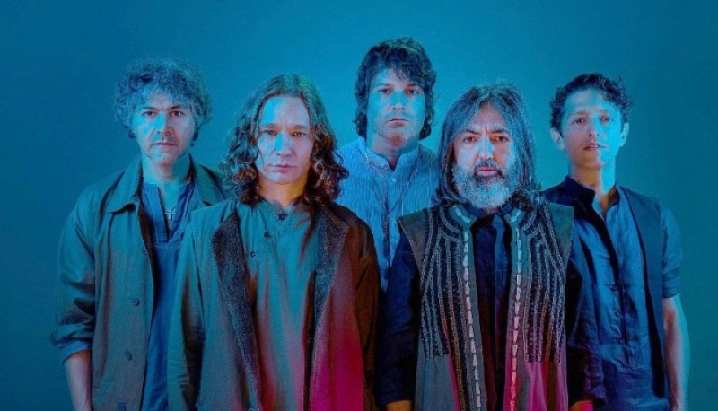

Babasonicos
Es una banda argentina de Rock alternativo, formada en el año 1991.

Integrantes
Adrián "Dárgelos" Rodríguez
Diego "Uma" Rodríguez
Diego "Uma-T" Tuñón
Diego "Panza" Castellano
Mariano "Roger" Domínguez
Año
Disco
1992
Pasto
1994
Trance Zomba
1996
Dopádromo
1997
Babasónica
1999
Miami
2001
Jessico
2003
Infame
2005
Anoche
2008
Mucho
2011
A propósito
2013
Romantisísmico
2018
Discutible
Hipercomedy fue su último disco